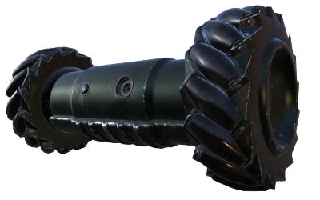
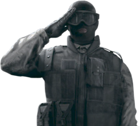

Attackers all have the ability to use drone at the start of a round for 45 seconds before beginning the attack. The drone is an RC car used survey the area and to find the objective, the location of which is initially unknown to attackers. Drones can "scan" defenders to mark their location so it is beneficial for attackers to try and locate not only the objective, but the defenders themselves. Attackers come with two drones: the initial drone at the start of the round and a second drone they can deploy once the actual attacking begins. There are preset cameras around the map that it is best for attackers to destroy or avoid as to not be seen by defenders while entering. Attackers can grapple up vertical outside walls. While grappled, they can enter through windows or hold position either right side up or upside down.
After droning, attackers are deployed at one of several entry points throughout the map. In ranked the spawn can be chosen, otherwise it is random. The timer then begins: 4 minutes for normal matchmaking and 3 minutes for ranked matchmaking. Attackers have this time to complete their objective based on which game mode it is. Every attacker has a unique gadget or ability they can use to aid in their offensive. Besides their drones, attackers can also equip a choice of 2 from: smoke grenades x2, flashbangs x2, breaching charges x3 (place on a breakable surface to explode and destroy it), claymores x1, and frag grenades x2. Frag grenades can be "cooked", or held for a few seconds to allow the fuse to burn before tossing it to decrease detonation time after being thrown.
Sledge Bio: Sledge was born on April 2, 1982 in John o'Groats,Scotland. His real name is Seamus Cowden and he is part of the SAS (Special Air Service of the British Army). His height is 6'3" and he weighs 229 lbs.
Gadget:Tactical Breaching Hammer: Sledge can equip a breaching hammer which breaks destructible surfaces relatively silently. One swing will break a wall, door, window, or section of the floor. Barbed wire and Castle walls(?) can be destroyed in one swing as well. It takes a long time to equip and unequip the hammer so it may put him in a bit of a risky situation if he needs to swap to a gun quickly.
Stats: Armor Rating: ● ● ○
Speed Rating: ● ● ○
Thatcher Bio: Thatcher was born on June 22, 1961 in Bideford, England. His real name is Mike Baker and he is part of the SAS (Special Air Service of the British Army). His height is 5'11" and he weighs 189 lbs.
Gadget:EMP Grenade x3: Thatcher has the ability to throw anti-electronic grenades. They don't do damage like a normal grenade, but instead they destroy any kind of electronics in the area of effect. Pulse(?) and Echo's(?) gadgets along with electronic gun sights do not get destroyed, but instead are temporarily disabled.
Stats: Armor Rating: ● ● ○
Speed Rating: ● ● ○
Ash Bio: Ash was born on December 24, 1983 in Jerusalem, Israel. Her real name is Eliza Cohen and she is part of the FBI SWAT (FBI Special Weapons and Tactics Teams). Her height is 5'7" and she weighs 138 lbs.
Gadget:Breaching Rounds x2: Ash can equip a special type of grenade launcher which shoots breaching rounds. This does not take the place of either her primary or secondary gun. The breaching rounds shoot straight and burrow into a the surface it collides with, then explodes. The explosions can break any breakable surfaces and will also do a decent amount of damage. These rounds do not destroy reinforced walls.
Stats: Armor Rating: ● ○ ○
Speed Rating: ● ● ●
Thermite Bio: Thermite was born on March 14, 1982 in Plano, Texas. His real name is Jordan Trace and he is part of the FBI SWAT (FBI Special Weapons and Tactics Teams). His height is 5'10" and he weighs 179 lbs.
Gadget:Exothermic Charge x2: Thermite has the ability to destroy a reinforced wall. Since normal breach charges cannot destroy reinforced walls, his gadget places a special type of breaching charge that is able to destroy a giant rectangular hole in a reinforced wall. The holes made are large enough to walk through. Him and Hibana(?) are the only 2 operators that can destroy reinforced walls, making them extremely useful for any offensive team.
Stats: Armor Rating: ● ● ○
Speed Rating: ● ● ○
Twitch Bio: Twitch was born on October 12, 1988 in Nancy, France. Her real name is Emmanuelle Pichon and she is part of the GIGN (Groupe d'Intervention de la Gendarmerie Nationale, English: National Gendarmeria Intervention Group). Her height is 5'6" and she weighs 127 lbs.
Gadget:Shock Drone x2: Twitch can deploy a different type of drone and comes equipped with two of them (same as normal drones). She still does the initial droning with all the other attackers, but using her special drone. Her drone cannot jump like normal drones but instead has the ability to shoot a small electronic shock in a direction. This shock can destroy any electronic gadgets the defenders have placed, destroy any cameras, or do 10 damage to an enemy. Each drone comes with a limited 15 shocks that can be used. Downed enemies can be finished off by 1-2 shocks. The drone can be destroyed by getting shot same as the normal drones.
Stats: Armor Rating: ● ● ○
Speed Rating: ● ● ○
Montagne Bio: Montagne was born on October 11, 1968 in Bordeaux, France. His real name is Gilles Touré and he is part of the GIGN (Groupe d'Intervention de la Gendarmerie Nationale, English: National Gendarmeria Intervention Group). His height is 6'2" and he weighs 220 lbs.
Gadget:Extendable Shield: Montagne holds a shield instead of a primary gun, but still has a secondary pistol he can shoot with while his shield is out. This shield can be extended to cover him fully from head to toe while standing upright compared to normal shields which only cover the top half while standing. The shield also covers his sides and slightly over top of his head.
Stats: Armor Rating: ● ● ●
Speed Rating: ● ○ ○
Glaz Bio: Glaz was born on July 2, 1987 in Vladivostok, Russia. His real name is Timur Glazkov and he is part of the Spetsnaz (Russian Special Purpose Forces). His height is 5'10" and he weighs 185 lbs.
Gadget:Flip Sight: Glaz only has one option for a primary gun and it is his sniper rifle (OTs-03). His gadget is a special sight on his gun that allows him to increase the range of his rifle making him the one longest range marksman in the game. The sight can be flipped on or off for shorter range fire. His sight also has a Thermal Feedback System that highlights any enemies in the sight as a bright yellow, including through smoke grenades. He can also pierce through Castle walls(?) without needing to destroy them, but will destroy them anyways in 12 shots.
Stats: Armor Rating: ● ● ○
Speed Rating: ● ● ○
Fuze Bio: Fuze was born on October 12, 1982 in Samarkand, Uzbekistan. His real name is Shuhrat Kessikbayev and he is part of the Spetsnaz (Russian Special Purpose Forces). His height is 5'10" and he weighs 187 lbs.
Gadget:APM-6 Cluster Charge x3: Fuze has the ability to place a device on a breakable surface, both horizontally or vertically. When activated, it injects 5 small explosive pellets throughout the room adjacent to where he placed the device, leaving him completely safe. The explosions then go off one by one and do lethal damage, but can do friendly fire including the hostage (if applicable).
Stats: Armor Rating: ● ● ●
Speed Rating: ● ○ ○
Blitz Bio: Blitz was born on April 2, 1980 in Bremen, Germany. His real name is Elias Kötz and he is part of the GSG 9 (Grenzschutzgruppe 9 der Bundespolizei, English: Border Protection Group 9 of the Federal Police). His height is 5'9" and he weighs 165 lbs.
Gadget:Flash Shield x5: Blitz holds a shield instead of a primary gun,but still has a secondary pistol he can shoot with while his shield is out. His shield only covers half of his self so he must crouch to be fully shielded. The shield has the ability to shoot a flash charge in front of him up to 5 times. They work the same as a flash bang, but are directly in front of him instead of thrown as a projectile. A Mute Signal Disruptor(?) does jam his flash and will not allow him to active the flash.
Stats: Armor Rating: ● ● ●
Speed Rating: ● ○ ○
IQ Bio: IQ was born on August 1, 1979 in Leipzig, Germany. Her real name is Monika Weiss and she is part of the GSG 9 (Grenzschutzgruppe 9 der Bundespolizei,English: Border Protection Group 9 of the Federal Police). Her height is 5'8" and she weighs 154 lbs.
Gadget:Electronics Detector: IQ holds a detector on her wrist that she can view at any time. This detects any electronics in a very large radius through walls including the bomb and biohazard (if applicable). While viewing, she holds her secondary out and is able to shoot any nearby electronics as to destroy any traps.
Stats: Armor Rating: ● ○ ○
Speed Rating: ● ● ●
Buck Bio: Buck was born on August 20, 1980 in Montreal, Quebec. His real name is Sébastien Côté and he is part of the JTF2 (Joint Task Force 2 of the Canadian Forces). His height is 5'10" and he weighs 185 lbs.
Gadget:Skeleton Key: Buck's primary gun can switch between rifle and shotgun. At any time, he can choose to switch to an under-barrel mounted 12 gauge shotgun, then swap back to his rifle allowing both close-quarters and long-range combat. Buck still carries a secondary handgun as well.
Stats: Armor Rating: ● ● ○
Speed Rating: ● ● ○
Blackbeard Bio: Blackbeard was born on March 12, 1985 in Bellevue, Washington. His real name is Craig Jenson and he is part of the Navy SEALs (United States Sea, Air, and Land Teams). His height is 5'11" and he weighs 185 lbs.
Gadget:Rifle-Shield x2: Blackbeard has the ability to mount a Transparent Armored Rifle-Shield onto his primary gun. This gives him full frontal headshot immunity while aiming down sights. He comes equipped with 2 of these shields, each with 60 health before they break. Blackbeard can choose to snap one onto his gun or remove them at any time, but while equipped he moves much slower.
Stats: Armor Rating: ● ● ○
Speed Rating: ● ● ○
Capitão Bio: Capitão was born on November 17, 1967 in Nova Iguaçu, Brazil. His real name is Vicente Souza and he is part of the BOPE (Batalhão de Operaçõ es Policiais Especiais, English: Military Police of Rio de Janeiro State in Brazil). His height is 6'0" and he weighs 190 lbs.
Gadget:Tactical Crossbow- Asphyxiating Bolts x2 and Micro Smoke Grenades x2: Capitão is able to equip a crossbow (this does not replace his primary or secondary guns) which can shoot 2 types of ammunition. The first, asphyxiating bolts, fires a bolt that burns all oxygen in a small area and does massive damage to anyone standing in it. The second, micro smoke grenades, shoots a smoke grenade that is provides larger cover than regular smoke grenades. Both ammunitions have two shots each and are shot silently from a long range.
Stats: Armor Rating: ● ○ ○
Speed Rating: ● ● ●
Hibana Bio: Hibana was born on July 12, 1983 in Nagoya, Japan. Her real name is Yumiko Imagama and she is part of the SAT (特殊急襲部隊; Tokushu Kyūshū Butai, English: Special Assault Team under the Japanese National Police Agency). Her height is 5'8" and she weighs 125 lbs.
Gadget:X-KAIROS x3: Hibana is able to equip a grenade launcher that shoots breaching round pellets that can be detonated from a distance. Each shot of the grenade launcher shoots six small pellets onto the desired location. The pellets then explode, able to breach a reinforced wall, making her the only other operator along with Thermite(?) able to breach reinforcements. The holes made from one round of pellets is half the size of Thermite's Exothermic Charge so two charges is needed to make a big enough hole to walk through.
Stats: Armor Rating: ● ○ ○
Speed Rating: ● ● ●
Jackal Bio: Jackal was born on February 29, 1968 in Ceuta, Spain. His real name is Ryad Ramírez Al-Hassar and he is part of the GEO (Grupo Especial de Operaciones de Spanish Cuerpo Nacional de Policía, English: Special Operations Group of the Spanish National Police Corps). His height is 6'3" and he weighs 172 lbs.
Gadget:Eyenox Model III x3: Jackal, with the press of a button, can view defender footprints on the ground using a tracking eyewear. He then has 3 charges of being able to scan someone's footsteps, tracking their location real-time. The tracking is not constant, but in in pulses every 5 seconds for 20 seconds. Footprints will look a dark red the more recent they are and fade to green the older they get. Caveira(?) is the one operator who cannot be tracked while her gadget is in use. Taking damage creates screen static in his vision if the gadget is active. Mute(?) will jam Jackal's headset making the screen static as well if attempting to activate the gadget while near a Signal Disruptor.
Stats: Armor Rating: ● ● ○
Speed Rating: ● ● ○
Ying Bio: Ying was born on May 12, 1983 in Hong Kong, Central. Her real name is Siu Mei Lin and she is part of the SDU (特別任務連 (nicknamed 飛虎隊 Flying Tigers), English: Special Duties Unit in Hong Kong). Her height is 5'3" and she weighs 115 lbs.
Gadget:Candela x3: Ying can use a cluster of flash charges that can either be anchored onto a surface or rolled out like a grenade. The Candela can be cooked (held for a few seconds before tossing) to delay the fuse. The Candela then fires into 6 separate flashes, each the same effect as a single flashbang. If anchored, they work similarly to Fuze, flashing the adjacent room to where she stuck them. Ying herself is immune to her own flashes from her special goggles, but her teammates are not nor is she immune to other types of flashes.
Stats: Armor Rating: ● ● ○
Speed Rating: ● ● ○
Zofia Bio: Zofia was born on January 28, 1981 in Wrocław, Poland. Her real name is Zofia Bosak and she is part of the JW GROM (Jednostka Wojskowa Grupa Reagowania Operacyjno-Manewrowego, English: Group for Operational Maneuvering Response). Her height is 5'10" and she weighs 159 lbs.
Gadget:KS79 LIFELINE- Impact Grenade x2 and Concussion Grenade x4: Zofia is able to equip a double barrel launcher than can fire concussion and impact grenades. This does not take the place of either her primary or secondary gun. Either ammunition option can be swapped to on the fly. Impact grenades break through walls in an instant while concussion grenades concusses enemies by impairing hearing and creating a dizzy effect. Both her and her sister Ela(?) are resistant to the concussion effect. She can also revive herself from being downed but will only have 1 health if she does so.
Stats: Armor Rating: ● ● ○
Speed Rating: ● ● ○
Dokkaebi Bio: Dokkaebi was born on February 2, 1988 in Seoul, South Korea. Her real name is Grace Nam and she is part of the 707th SMB (Hangul: 제707특수임무대대, Hanja: 第707特殊任務大隊, English: 707th Special Mission Battalion in the Republic of Korea Army Special Warfare Command). Her height is 5'7" and she weighs 137 lbs.
Gadget:Logic Bomb x2: Dokkaebi can hack all defenders PDA devices to emit a loud noise and vibration, compromising their position to the attackers. Defenders can turn the vibrating off but they have to stop their actions to do so, making them vulnerable. After a defender is killed, Dokkaebi can take their PDA and use it to access all defender cameras including Valkyrie cameras(?). Echo(?) is immune to being hacked since he collaborated with Dokkaebi in the past along with anyone standing near a Mute Signal Disruptor(?). Defenders are notified if an attacker is viewing the cameras because of Dokkaebi.
Stats: Armor Rating: ● ● ○
Speed Rating: ● ● ○

Recruit
Not picking any of the above operators on attack will select "recruit" by default who can equip any of the other types of guns but does not have a gadget like the other operators. He also cannot use attachments for his guns so willingly picking recruit is never a good option. He isn't technically an operator and more of a default if no other operators are available or were not chosen at the start of the round.